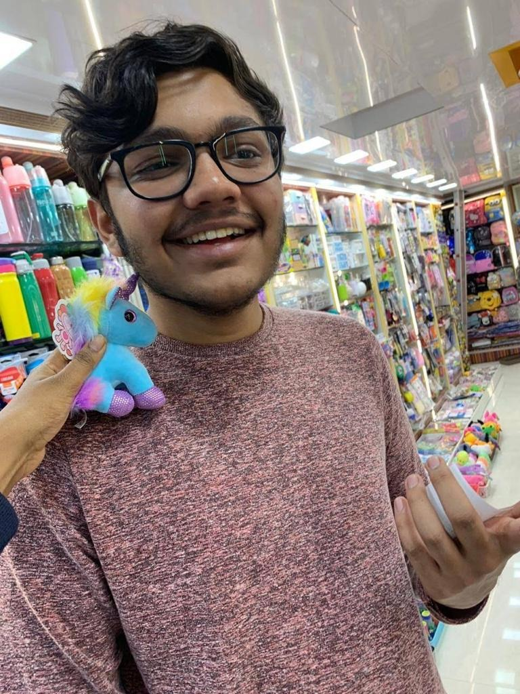

Hi, I'm a thirdie from the Electrical Engineering Department in the Dual Degree
program (Microelectronics) and this is a story of how not to go about getting an
intern. First, a little bit about myself.

I am a recovering drug addict. I've been clean for over a year, I've cleared my
(many) backlogs and have rescued my CPI a bit. I am a foodie, in possession of a
self-created list of some of the best places to eat in Bombay. I enjoy Dramatics and
ducking responsibilities I don't really like. I am an indie music, alt rock, prog rock
and metal fan, and I hate pop and EDM. I love reading books - both fiction and
nonfiction. I love arguing, ahem, debate. I am a bad but enthusiastic chess player
(shoutout to the Tal fans out there). Lastly, I think of my life as something of a
tragicomedy, and consider myself a realist.
Congratulations if you actually read all that completely useless information about
me. I thought I'd have you hooked after the drug addict line. Anyways, coming to
the point; I secured my third year intern at Qualcomm India Pvt. Ltd. and I came to
know about this internship through my batchmates and the Internship Blog.
But let me start at the beginning. As everyone knows, third year interns decide
your life. It will determine whether you will be an eternal failure, an IIT burnout,
or a shining beacon of this institute, the pride and joy of everyone around you.
Well, not really. I'm not saying third year interns aren't important; of course they
are. However, they are important in a different way. They are actually there to help
you get some insight on an extremely important thing - your future career. They
are a means of getting a glimpse at what a certain job is like. For example, in my
case, I pretty much have no idea what I want to do. All I know is that I'm not at all
non-core material. I cannot bear the idea of a 9 to 5 job, or schedules or strict
deadlines or boring meetings or generally devoting my time to the soulless pursuit
of money. So that left me with the options of working a core electrical job at a core
electrical company, a computer science kind of job (data science, AI, so on) or my
current favourite, pursuing a career in academia (basically a professor at a
university). In order to make this decision a more informed one, I decided to
explore all the fields. For the core electrical field, I decided to do a summer intern
in a core electrical company. As for academia, I decided that the Supervised
Research Exposition course in the first semester of my 4th year would be sufficient
exposure. A research project under a professor for 3-4 months would give me a
good idea if I like the field of research.
As for the data science/AI field, I got to
know about the Mars Colonisation Program of Microsoft and I got in, to get a taste
of basic AI. I have some plans of further exploring this field. All that said, let's
come to the core electrical field in which I decided to get a summer intern.
First of all, a word of advice. DO NOT blindly try to go for the very first company
that comes your way in the field you want to intern in. In the first couple of weeks,
I actually had no idea about the Internship Blog and so on. It was only after a friend of mine told me about it that I discovered it. So unfortunately I missed a few
companies but I wasn't too sad about it as they were mostly non-core. Still, I was a
bit panicked. I saw many of my batchmates getting interns, and honestly, I was
scared that I would be left behind. I had just managed to clear all of my backlogs in
the summer, and so my CPI wasn't that great either. I actually wanted to app and
get a research intern at a foreign university; however, the intern craze was
inescapable. Under pressure, apping was too uncertain and too slow. I was plagued
with worries, of the difficult 3rd year 1st sem, of my low CPI, of the summer intern
and so much more. With all this in mind, and my friends adding more pressure
(Ark intern lagwa le jaldi se, acchi companies sirf August tak aati hai ... tab tak
nahi lagi to I2 company mei kaam karna padega...) I embarked upon my mission.
The first company I gave the test for was Texas Instruments. I got selected for the
interview, and at the end of the final round of interviews, I was told to watch a
particular lecture series and email them. They would then take another telephonic
interview.
That wasn't to happen though, as very soon Qualcomm came, and after going
through the same process (technical test, multiple interviews), I was selected
outright this time. My scholastic achievements and rad communication skills (:P)
came to my rescue. I was pretty happy for the moment, having got one hurdle out
of the way. However, I came to regret this decision. Many, many companies came
after Qualcomm, many with much more interesting work, and I wished I hadn't
succumbed to the pressure. So remember that: it's okay to hold out.
For those interested in interning in such a field, from my very limited experience I
don't really have a lot of tips. The technical tests are not extremely difficult. Revise
what you were taught in Analog Circuits(EE204), DigiSystems(EE224) and
Electronic Devices and Circuits (EE 207). The interview questions were mostly
conceptual and somewhat testing application skills, and were based on basic
circuits and some theoretical knowledge of transistors and digital electronics. A
broad revision of the aforementioned courses should suffice. The interview
questions were not too calculation intensive but mostly tested if your base knowledge is solid. If you didn't really do well/pay any attention in any/all of these courses (like me), worry not. Just grab some notes and do a quick study. As I mentioned before, there is no need to get into the mathematics of it all, so it wouldn't take too much time.
Moving on to the experience of the intern itself. Right off the bat, this work from home intern is vastly different from the on site intern. There were a lot of issues before the intern even started on whether it would in fact, start. They stated a lot of times that the interns have a heavy dependence on labs so a WFH intern will be difficult to arrange. Finally, they did manage to arrange some projects and to set up some suitable infrastructure. The initial part of my project was largely learning based. It has been (very) well drilled into my head that I must protect company IP (Intellectual Property for those lucky enough to have never heard of it) and hence I can't go into much detail about the project. The workload wasn't much really.
However, the WFH experience really pushes most of the responsibility on the intern. You can pretty much pace it how you like. If you are enthusiastic about the work, you can work hard and the company of course has no dearth of work to give you. If, on the other hand, you're like me and like to take it easy, a few hours of work a week concentrated around the time of presentations, etc could also suffice.
We were allotted 'VDesks' to work on to prevent IP contamination. So, in summary, the WFH experience isn't really that similar to the actual experience of working in a company. Core electrical isn't quite the same without the labs. That aside, the experience was okayish for me. The work was light and I had plenty of time to pursue futile things such as self-improvement and bonding with old friends. I didn't really like the corporate culture much: to put it in a word, it was all too ostentatious for me. I wasn't very comfortable and a lot of small things, especially those in contrast to the academic world I was used to, bothered me a lot.
The overzealous guarding of 'company confidential information' (oof), the simplistic and extremely annoying training exercises (double oof, wish I could share some examples) and so on are some examples of such things. However, this isn't really a normal intern, and it is quite possible that I could have found things to be different had I been on site in Bangalore.
To conclude this long and meandering disquisition, I would like to say that just keep in mind that it's not necessary to have an astronomical CPI or mind-boggling extracurriculars and/or co-curriculars. Having none of those two, I can only hazard a guess that they do help, but I can say for sure that it is much more important how you present yourself. Excellent communication skills and a good deal of self-confidence go a long way. Present yourself according to the people in front of you (for example, companies like well rounded people). Brush up on the courses I mentioned, and don't buckle under pressure! Hold out for something you really do like. Lastly, and most importantly, plan long term things out a bit.
Make informed choices and don't blindly make something your goal without evaluating it thoroughly and objectively first, taking your interests into account. I would like to sign off with a quote by the legendary Yogi Berra:-
" If you don't know where you are going, you might wind up someplace else. "
Signing off,
Ark Modi
17D070007
PS:- Couldn't resist another one by Robert Frost -
"By working faithfully eight hours a day, you may eventually get to be boss and work twelve hours a day."
Credits
This blog has also been uploaded by Insight, IIT Bombay. Special thanks to insight-iitb-summerblogs.